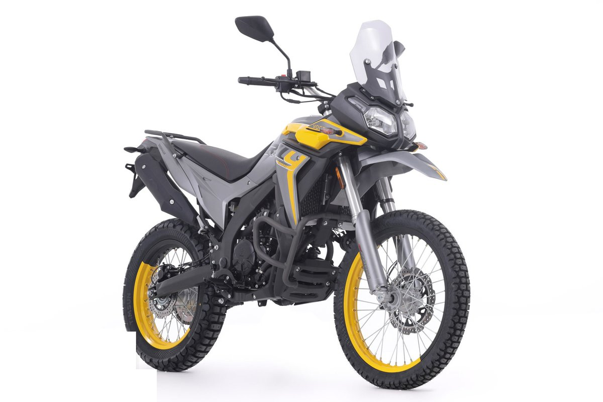

Ruta a Villa de Leyva
Empedrado colonial y curvas de montaña
Cerca de 150 km desde Bogotá por vía pavimentada y algunos tramos destapados. La Voge Rally 300 se mueve muy bien entre las curvas de la cordillera y en el empedrado del centro histórico.